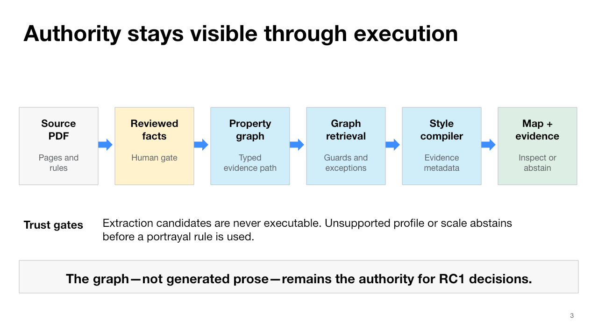

School
Versioned retrieval, governance, evidence path, and map execution.
9920103 · PDF 61
A stable five-scene demonstration that turns reviewed national portrayal facts into executable graph knowledge, evidence-backed decisions, and MapLibre layers over a PMTiles vector map.
Stable Demo RC1 · nma-demo-v0.2-rc1
Release status: the executable candidate is verified. The GitHub Pages URL remains unavailable until PR #1 is merged or a separate deployment is explicitly approved. Repository readiness is not deployment completion.
Each scene exercises a different agent capability while preserving the same reviewed-record → graph → retrieval → decision → map → evidence path.
Versioned retrieval, governance, evidence path, and map execution.
Deterministic symbol selection with authoritative dimensions.
Semantic alias resolution and labelled portrayal.
Geometry-aware fill, outline, and companion icon.
Conditional exception handling and an explicit abstention boundary.
Reviewed observations compile into a portable property graph. Retrieval and portrayal return the rule, document version, PDF page, graph nodes and edges—not just a plausible symbol.

Python 3.11 or later is enough for the five-scene portrayal path. These commands rebuild the shared graph and style, verify the frozen RC1 evidence, run the test suite, and start a local HTTP preview.
git clone https://github.com/dongpo/topoMap.git
cd topoMap
git switch codex/nma-v0.2-authoritative
python3 -m venv .venv
. .venv/bin/activate
python -m pip install ".[dev]"
make demo-reset
make demo-rc1
make test
python -m http.server 8000Then open localhost:8000/nmaAgentDemo.html. The full quickstart includes the expected sequence, online preflight, degraded mode, and recovery ladder.
| Evidence | RC1 result | Interpretation |
|---|---|---|
| Automated clean-reset soak | 20/20; 0 defects | Repeatable executable path |
| Cached live-map browser soak | 10/10; 0 console errors | Verified conference runtime |
| Five-scene contract | 5/5 frozen outputs | Same inputs, actions, pages, and paths |
| NMA-Bench development set | 21 deterministic tasks | Architecture test, not a publication estimate |
Source, review history, tests, and the public RC1 candidate branch.
Open repository →PublicArchitecture, release evidence, live sequence, installation, and recovery procedures.
Open RC1 evidence →PublicD18 five-scene narrative, architecture figures, and claim-to-evidence matrix.
Open conference narrative →Candidate, not a published paper